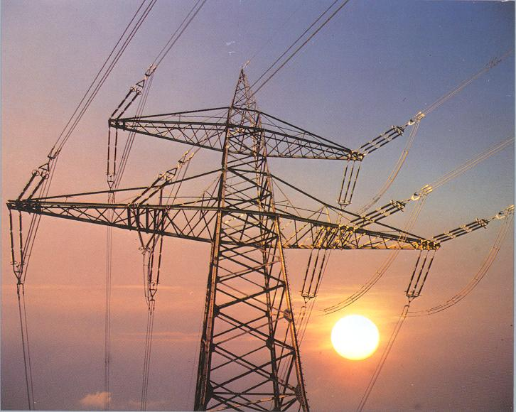
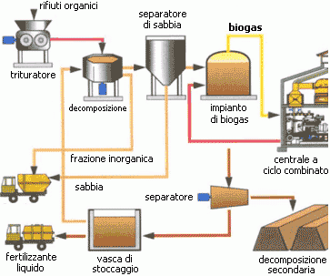
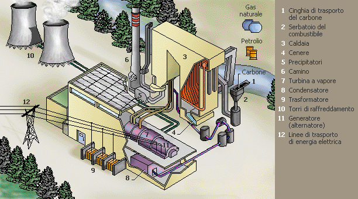
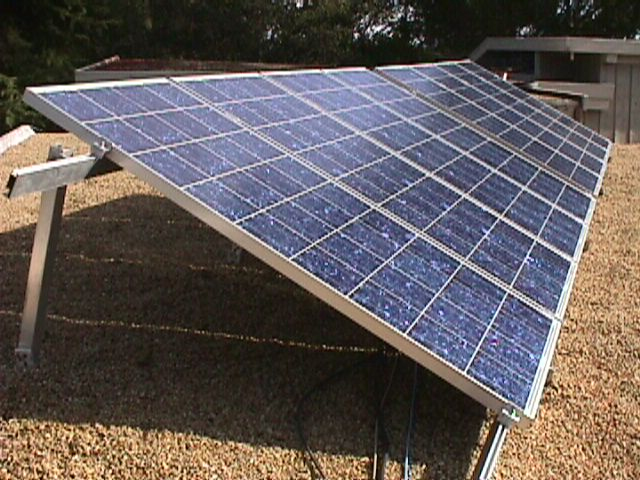
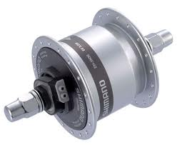

Risparmio Di Energia
| Energia Elettrica | In fisica, l'energia potenziale elettrica, anche detta energia potenziale elettrostatica, è l'energia potenziale del campo elettrostatico. Si tratta dell'energia posseduta da una distribuzione di carica elettrica, ed è legata alla forza esercitata dal campo generato dalla distribuzione stessa.
Insieme all'energia magnetica, l'energia potenziale elettrica costituisce l'energia del campo elettromagnetico.
L'energia potenziale elettrostatica può essere definita come il lavoro svolto per creare una distribuzione di carica partendo da una configurazione iniziale in cui ogni componente della distribuzione non interagisce con gli altri.
Ad esempio, per un sistema discreto di cariche essa coincide con il lavoro svolto per portare le singole cariche da una posizione in cui esse hanno potenziale elettrico nullo alla loro disposizione finale. |
 |
Produzzione di Energia Elettrica | La produzione di energia elettrica rappresenta il 'primo passaggio' nel processo che conduce dalla produzione fino all'utilizzatore finale di energia elettrica. Le altre fasi del processo sono la trasmissione di energia elettrica e la distribuzione di energia elettrica.
Tipicamente la produzione avviene per conversione sempre a partire da una fonte primaria di energia attraverso le centrali elettriche e regolata dal dispacciamento (produzione centralizzata) oppure attraverso sistemi di autoproduzione attestati sulla rete elettrica di distribuzione (produzione distribuita).
|  |
Centrale Elettrica | Una centrale elettrica è un impianto industriale atto alla produzione di energia elettrica.
La società moderna si basa in maniera imprescindibile sull'uso dell'energia elettrica, perciò la produzione di tale energia e, conseguentemente, le centrali elettriche hanno un'importanza tecnologica e strategica fondamentale.
Le centrali elettriche odierne producono energia quasi esclusivamente in corrente alternata avvalendosi di macchine elettriche denominate alternatori. Esistono eccezioni in Russia, dove, per problemi di perdite su elettrodotti estremamente lunghi, sono state create centrali elettriche in corrente continua (HVDC).
|  |
Palelli Fotovoltaici |
Un modulo fotovoltaico è un dispositivo optoelettronico, composto da celle fotovoltaiche, in grado di convertire l'energia solare incidente direttamente in energia elettrica mediante effetto fotovoltaico, tipicamente impiegato come generatore di corrente in un impianto fotovoltaico.
Può essere meccanicamente preassemblato a formare un pannello fotovoltaico, pratica caduta in disuso con il progressivo aumento delle dimensioni dei moduli, che ne hanno di fatto incorporato le finalità. Può essere esteticamente simile al pannello solare termico, ma, pur appoggiandosi entrambi sulla captazione dell'energia solare (radiazione solare) come fonte di energia primaria, hanno scopi e funzionamento molto differenti.
|  |
Dinamo | Una dinamo è una macchina rotante per la trasformazione di lavoro meccanico in energia elettrica, sotto forma di corrente continua
(DC, per gli inglesi, direct current) assumendo così la funzione di trasduttore. |  |
|